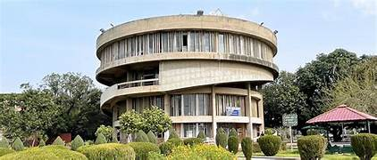
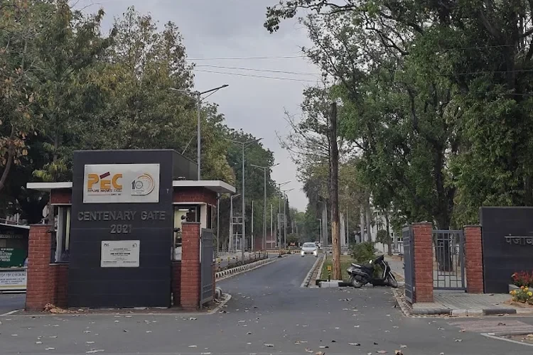
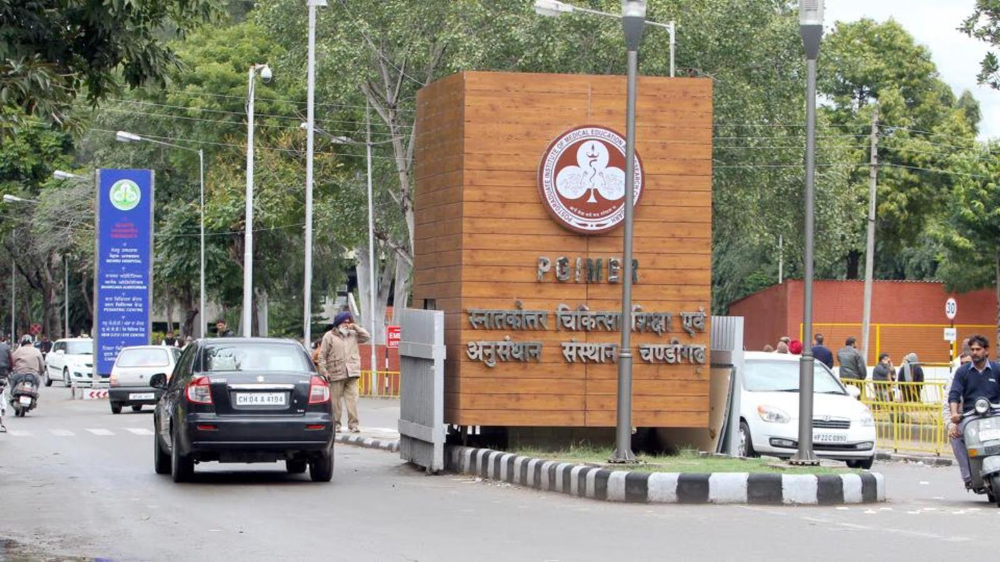

Panjab University
Panjab University (PU), located in Chandigarh, is one of India’s oldest and most prestigious universities. Originally established in 1882 in Lahore, it was re-established in Chandigarh after the Partition of India in 1947. The university is a major center for higher education and research in northern India and attracts students from across the country and abroad.

The campus of Panjab University is spread over a vast area and is known for its beautiful architecture, green lawns, and well-planned academic buildings. Designed by Pierre Jeanneret, the campus reflects modernist architectural principles and complements Chandigarh’s overall urban planning.
Punjab Engineering College (PEC)
PEC University of Technology, commonly known as PEC Chandigarh, is one of India’s premier engineering institutions. Founded in 1921 in Lahore and later relocated to Chandigarh, PEC has a rich legacy of producing skilled engineers and technologists.

The campus is known for its modern infrastructure, advanced laboratories, and expansive green spaces. PEC offers undergraduate, postgraduate, and doctoral programs in engineering disciplines such as Civil, Mechanical, Electrical, Electronics, Computer Science, and Information Technology.
GMCH & Post Graduate Institute (PGI)
Government Medical College and Hospital (GMCH), Chandigarh, is one of the leading medical institutions in northern India. It provides quality medical education along with comprehensive healthcare services, combining academics with practical clinical training.

The Post Graduate Institute of Medical Education & Research (PGI) is a premier institute for advanced medical education, research, and specialized healthcare. PGI is internationally recognized for its excellence in medical research, clinical expertise, and patient care.
